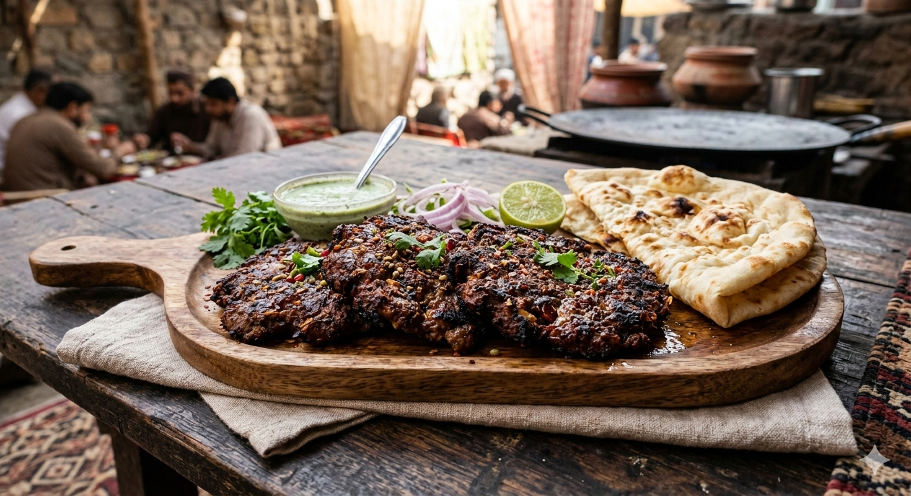

Master Recipes
Chapli Kabab Recipe

Ingredients
- Minced Meat: 500g Beef or Mutton (should have at least 20% fat for juiciness)
- Onions: 2 medium (finely choped, moisture squeezed out)
- Tomatoes: 2 medium (seeded and finely chopped)
- Maize Flour (Makki ka Atta): 1/2 cup (for binding and nuttiness)
- Egg: 1 whisked (or 1 scrambled egg for traditional texture)
- Pomegranate Seeds (Anardana): 2 tbsp (coarsely crushed—this is the secret ingredient!)
- Coriander Seeds: 2 tbsp (toasted and coarsely crushed)
- Cumin Seeds: 1 tbsp (toasted and crushed)
- Green Chilies: 3–4 (finely chopped)
- Ginger-Garlic Paste: 1 tbsp
- Spice Mix: 1 tbsp Red chili flakes, 1 tsp salt (to taste), 1 tsp Garam masala
- Fresh Herbs: 1/2 cup fresh cilantro (chopped)
- Fat for Frying: Tallow (traditional) or Vegetable Oil
Steps
- Prep the Meat: Place the minced meat in a large mixing bowl. If it feels too wet, pat it dry with a paper towel.
- The "Kneading" Secret: Add the salt, ginger-garlic paste, and all the dry spices (coriander seeds, cumin, chili flakes, and anardana). Knead the meat with your hands for about 5 minutes, almost like bread dough, to release the proteins. This ensures the kababs don't break.
- Add the Aromatics: Mix in the finely chopped onions (ensure they are dry), green chilies, and fresh cilantro.
- Incorporate Binding & Body: Add the maize flour and the egg. Mix thoroughly until the mixture feels tacky and holds its shape.
- Fold in Tomatoes: Gently fold in the chopped tomatoes at the very end. Don't over-mix once the tomatoes are in, or they will release too much water.
- Chill Out: Let the mixture marinate in the fridge for at least 30 minutes to 1 hour. This helps the flavors marry and makes shaping easier.
- Shape the Kababs: Take a handful of the mixture and flatten it into a large, thin disc. Note: They shrink during frying, so make them wider than you think you need! (Pro tip: Press a thin slice of tomato onto one side of the patty).
- Shallow Fry: Heat oil or fat in a wide skillet over medium heat. Carefully slide the kabab in. Fry for 3–4 minutes on each side until dark golden brown and slightly charred on the edges.
- Drain and Serve: Remove and place on paper towels. Serve piping hot with naan and a zesty mint chutney.
Print